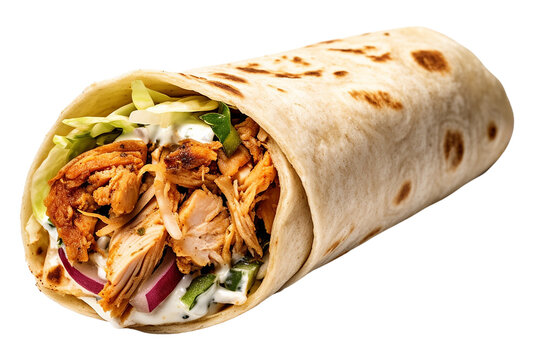

Shawarma-Recipe
Home-Page

Description on Shawarma
Shawarma is a popular Middle Eastern street food made by marinating thin slices of meat in a blend of aromatic spices, then roasting them until tender and flavorful.
While traditional shawarma is cooked on a vertical rotisserie, it can be easily recreated at home using a grill, oven, or frying pan. It is commonly served wrapped in flatbread with fresh vegetables and a creamy garlic or tahini sauce, creating a delicious balance of savory, tangy, and refreshing flavors.
Ingredients needed
- 800 g boneless chicken thighs
- 3 tbsp plain yogurt
- 2 tbsp olive oil
- 4 cloves garlic, minced
- 1 tbsp lemon juice
- 1 tsp paprika
- 4–6 pita breads or flatbreads
- ½ red onion, thinly sliced
- shredded Lettuce
Steps
- Combine yogurt, olive oil, garlic, lemon juice, and all spices in a bowl.
- Coat the chicken thoroughly with the marinade.
- Cover and refrigerate for at least 2 hours, preferably overnight.
- Preheat a grill, oven (200°C), or frying pan.
- Cook the chicken until browned and the internal temperature reaches 75°C.
- Let the chicken rest for 5 minutes.
- Slice the chicken into thin strips.
- Mix all garlic sauce ingredients until smooth.
- Warm the pita breads.
- Spread garlic sauce over each pita.
- Roll tightly into a wrap.
- Toast the wrap briefly for extra crispiness if desired.
- Serve Immediately.